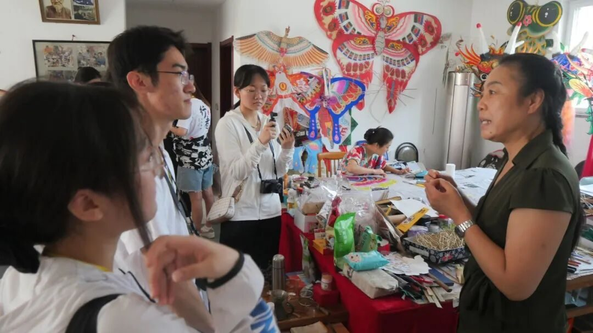

杨家埠寻风筝记忆，木纸鸢续匠心情韵

01
走近潍坊风筝

相彼鸢矣，亦飞戾天
● 杨红卫
杨红卫老师受爷爷耳濡目染的影响和家庭的熏陶，从小就喜爱风筝并能够扎制出简单的风筝，她聪颖好学、善于创新，很快就被选入厂风筝设计室工作，多年来杨老师潜心研究，曾多次作为代表参加国内外各种风筝制作和放飞比赛。

● 家庭作坊
刚迈进杨老师家庭手工作坊的大门，墙上各式各样色彩鲜艳的手工风筝便映入眼帘，在杨老师的讲解下，我们深入了解了潍坊风筝的种类和制作工艺。潍坊风筝兴于明初，以造型合理、色彩鲜艳、起飞平稳、富有民间乡土气息自成一家。它所反映的内容、表现形式、绘制技法、色彩运用以及放飞等方面都有它鲜明的地方艺术特征，在中国风筝史上占有重要的地位。
左右滑动查看更多

02
走入店铺街访
抑之则有限，纵之则无穷
● 调研准备
调研组和采访组的同学相互配合，准备了一系列关于潍坊风筝文化及传承相关问题。在街访中我们了解到：近年来，潍坊风筝受到了当地政府的高度重视，在挖掘、抢救、继承、保护等方面做了许多卓有成效的工作。
● 调研背景
自1984年起每年举办潍坊国际风筝会，在市中心建起了风筝博物馆，在潍坊杨家埠村建成了杨家埠民间艺术大观园，建成了国内最大的风筝厂和风筝一条街。目前当地风筝扎制专业户达到近百户，潍坊成了誉满全球的“世界风筝都”。
● 手造精神
与此同时，自媒体的发展壮大也让更多人了解、喜欢上潍坊风筝。杨老师非常肯定地说潍坊风筝不会失传，对于潍坊风筝的制作，杨老师有她自己的想法，她认为风筝不能只是用来观赏的工艺品，而是要能够飞起来，每一个风筝制作完后，她都会试飞保证质量，即使她的风筝供不应求，她也不会为了获得更多利润而降低做风筝的标准。
左右滑动查看更多
最后成员们在杨家埠民间艺术大观园进行街访，并邀请群众填写调查问卷，当地的群众都很热情，都发自内心希望潍坊的非遗文化能够长久地传承下去。
时间冲淡颜料的鲜艳，
诉说岁月流逝，
繁华永存的韵味，
每一件风筝成品的独一无二，
诠释着传承人“择一事做一生”的执着。
实践团也将不忘初心、砥砺前行！


来源 | 行者无疆实践团
图片 | 孙琦崴 郝钧宇 郭知钰 范伊诺
文字 | 王馨悦
排版 | 范伊诺
审核 | 崔雨琪 杨婧葳